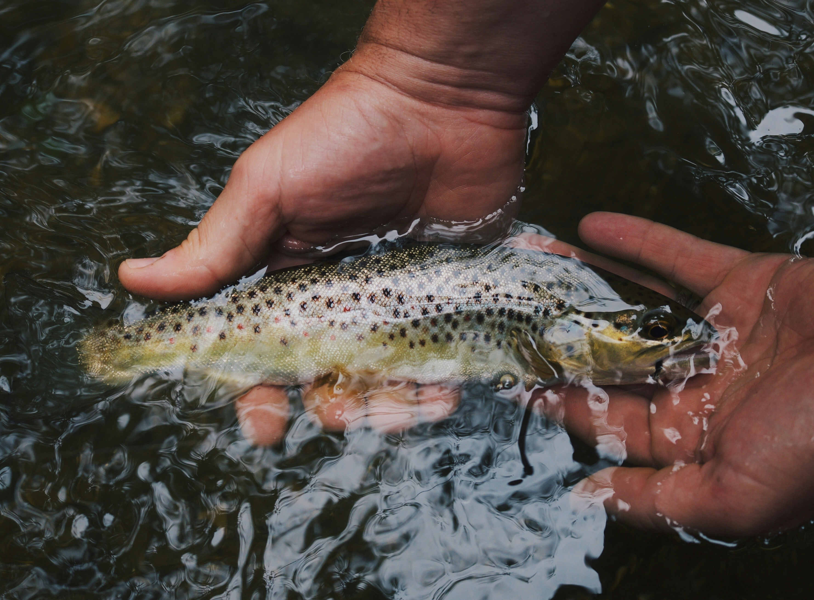

River Fishing in Arizona

Arizona’s best trout water is often found in short, scenic reaches of rivers and creeks fed by springs or reservoir releases. Public access varies from roadside pullouts to trail hikes, so plan for sun, rough rocks, and changing flows after storms. Catch-and-release practices help protect wild fish; handle trout gently and keep them in the water when possible.
Salt River (East Fork and Canyon stretches)
How to get there: From the Phoenix area, take US 60 toward Globe and watch for Forest Service roads and recreation sites that lead to the upper Salt and its tributaries. Some stretches require a Tonto Pass or day-use fee; check current signage at the trailhead.
Best time of year: Late fall through early spring offers cooler water for trout when releases and rain keep flows steady. Summer can be low and warm—fish early or focus on deeper pools.
Flies to try: Prince nymphs, zebra midges, and small streamers in olive or black. During hatches, match the size with parachute Adams or elk hair caddis.
Fish you may find: Rainbow trout where the water stays cold enough; in warmer sections, look for bass and sunfish near structure and slower water.
Verde River
How to get there: Access points are scattered from north of Phoenix toward Camp Verde and Cottonwood. Parks and nature preserves offer trails to the water; bring sturdy footwear for rocky banks.
Best time of year: Spring and fall are most comfortable for wading. Monsoon season can muddy the river quickly—check flow gauges before you go.
Flies to try: Woolly buggers, crawfish imitations, and large attractor dries when fish are looking up. Nymph rigs with split shot help in deeper runs.
Fish you may find: Bass in warm pools, occasional trout in cooler tributaries, and catfish in deeper holes.
Oak Creek (Sedona area)
How to get there: State Route 89A follows Oak Creek Canyon with multiple day-use areas and picnic sites. Red Rock passes or fees may apply in certain spots—read posted rules before you fish.
Best time of year: Spring through early summer and again in fall often fish well. Midday summer heat can stress trout; land fish quickly and avoid fishing when water temperatures are high.
Flies to try: Small bead-head nymphs, RS2s, and midge patterns in sizes 18–22. Dry flies like Griffith’s gnats work on calm slicks.
Fish you may find: Rainbow and brown trout in stocked and wild populations depending on the reach.